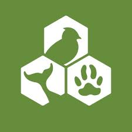

Protecting animals is essential for maintaining biodiversity and the health of ecosystems. Animals play a vital role in nature, contributing to balance and the continuity of life. Unfortunately, animals face numerous threats from habitat destruction, climate change, and exploitation by humans. By protecting animals, we safeguard ecosystems and prevent the extinction of species that are integral to our planet's health. Supporting animal protection efforts not only helps preserve natural habitats but also reflects humanity's respect for other life forms, promoting a world where humans and animals can coexist harmoniously.
For 60 years, WWF has worked to help people and nature thrive. As the world's leading conservation organization, WWF works in nearly 100 countries. At every level, we collaborate with people around the world to develop and deliver innovative solutions that protect communities, wildlife, and the places in which they live.
Here are some examples of organizations dedicated to the care and protection of animals:
People for the Ethical Treatment of Animals PETA - peta.org. Advocates against animal cruelty and promotes veganism and alternatives to animal testing.
501 Front St., Norfolk,World Wildlife Fund WWF - worldwildlife.org. Focuses on conservation and protection of endangered species and their habitats globally.
 1250 24th Street, N.W.
1250 24th Street, N.W.Animal Welfare Institute AWI - awionline.org. Works to protect animals from harmful human actions and advocates for stronger animal protection policies.
 900 Pennsylvania Avenue,